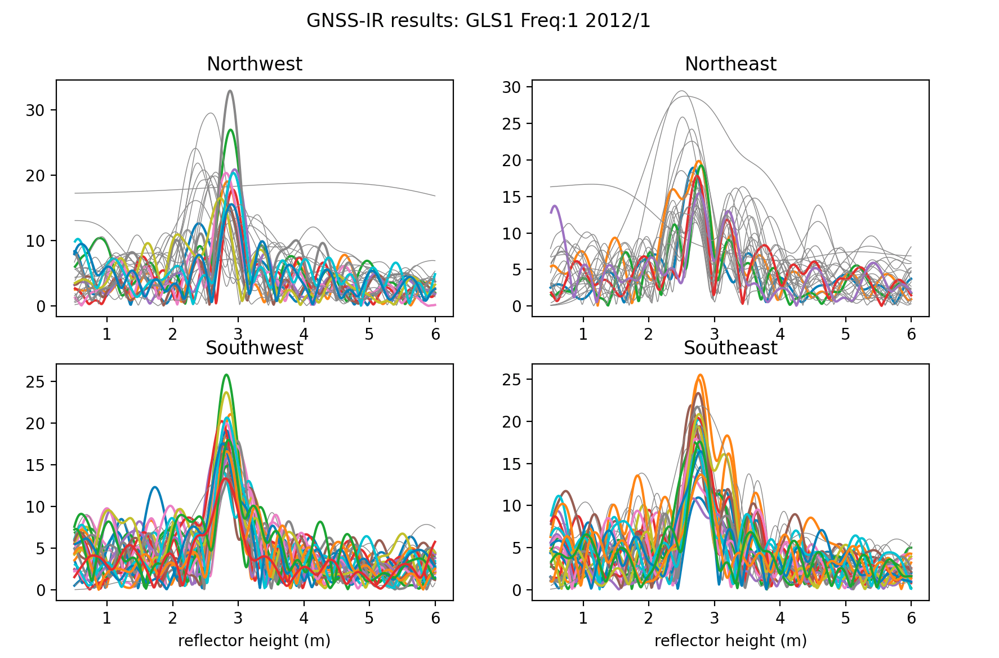

Test the code at Dye 2, Greenland
The site is called gls1. Here we will only analyze the data from 2012. The data are archived at UNAVCO. The dataset is discussed extensively in this open option paper.
Exercise for the reader: find a photograph of the site at UNAVCO
Coordinates: Use the UNAVCO DAI if you like. Or you can try the Nevada Reno site.
Position time series for gls1 can be retrieved from Nevada Reno
This site was originally installed with an elevation mask of 7 degrees. Later it was changed. To keep things the same, I strongly prefer that the same elevation angle mask is used throughout. Meaning I am going to set the minimum elevation angle to 7 at the analysis stage:
make_json_input gls1 66.479 -46.310 2148.578 -h1 0.5 -h2 8 -e1 7 -e2 25
The make_json_input defaults are to use all good GPS frequencies (1,20,5). However, the standard L2 data at gls1 are really not useful (and L2C was sometimes tracked and sometimes not tracked). L5 has never been tracked. Here it is better to simply use L1. Handedit the json to remove L2C and L5. It should look like this. Now make some SNR files for the year 2012:
rinex2snr gls1 2012 1 -doy_end 365
Look at the first one - make sure that the RH defaults are big enough to include the answer:
quickLook gls1 2012 1 -e1 7 -e2 25
{kind=link}
Analyze all the 2012 data:
gnssir gls1 2012 1 -doy_end 365
Make a daily average (since you only have L1 at this site, I am requiring 30 tracks instead of 50)
daily_avg gls1 0.25 30
The plots:


That is what I call a lot of melt! If you want the reflector height answers, set the requested txt output filename in daily_avg.